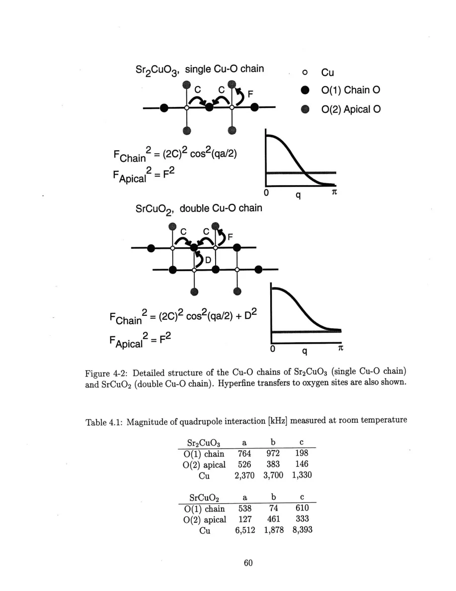
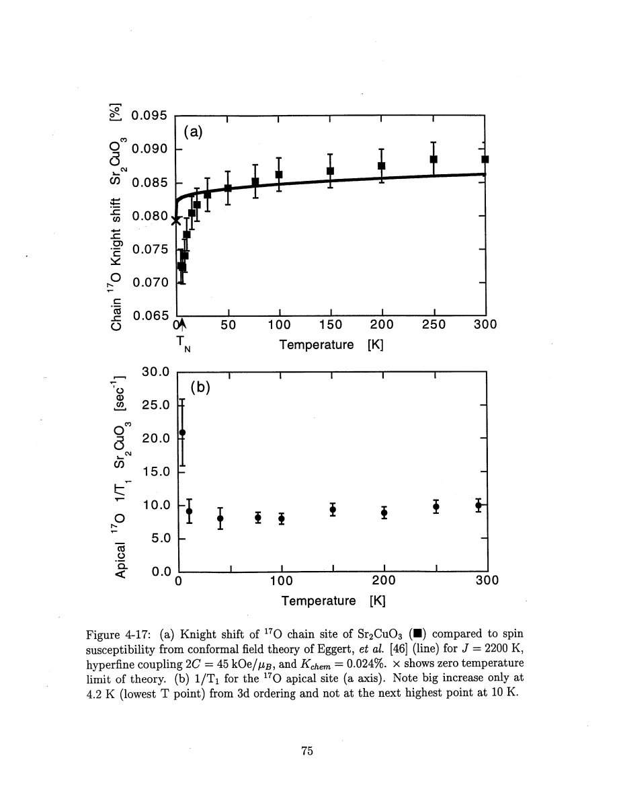
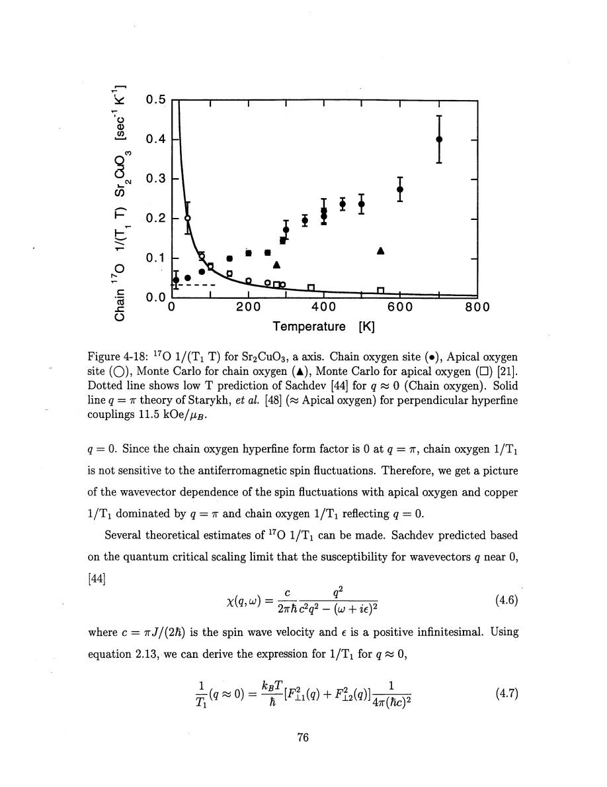

Thurber · supplied source 1999 · chapter unit
Chain oxygen, apical oxygen and uniform susceptibility
The nuclear site determines which momentum channel is visible; the extra neighboring chain in SrCuO₂ changes the subtraction needed.
The question: How does local geometry separate uniform and staggered fluctuations in Sr₂CuO₃ and SrCuO₂?
Before you start: the terms you need
- Spin-1/2 Heisenberg antiferromagnet: neighboring electron spins interact through J Sᵢ·Sⱼ with J>0.
- Hyperfine coupling: the electronic spin polarization produces a local magnetic field at a nucleus.
- Wave vector q: distinguishes uniform spin fluctuations near q=0 from staggered fluctuations near the antiferromagnetic vector Q.
- Correlation length ξ: a distance over which staggered electron-spin correlations remain appreciable.
- NMR/NQR: applied-field magnetic resonance versus resonance in the electric field gradient with no applied static field.
- Historical scope: these are experiments and interpretations reported in the supplied 1999 thesis, not a current review of quantum-spin transport.
See → explain → check
Follow the idea in 3 pictures.
Picture 1 / 3
Compare chain and apical oxygen
Look for: Chain O sits between two Cu spins; apical O samples principally one Cu.
Swipe across the picture to read every label, or enlarge it below.
- Cu
- Chain O: two equal C
- Apical O: one E
- Staggered cancellation
Teaching schematic. Sr₂CuO₃ site geometry. Chain F(q)=2C cos(qa/2), apical F(q)≈E. A staggered field cancels only at the symmetric chain site.
A different position creates a different momentum filter.
Picture 2 / 3
Add the other chain in SrCuO₂
Look for: The oxygen has a second path to a Cu in the neighboring chain.
Swipe across the picture to read every label, or enlarge it below.
- Single chain Sr₂CuO₃
- Double chain SrCuO₂
Teaching schematic. Independent-chain approximation removes interference terms. D≈E permits chain-minus-apical comparison; the subtraction is not exact at all temperatures.
Subtracting the apical contribution is an approximate channel separation.
Check the original: PDF p. 60 · PDF p. 80 · PDF p. 81 · PDF p. 83 · PDF p. 84
Picture 3 / 3
Distinguish uniform susceptibility and dynamic rate
Look for: A low-T shift discrepancy and an increasing uniform relaxation rate test different theoretical limits.
Swipe across the picture to read every label, or enlarge it below.
- Static shift
- Dynamic rate
Teaching schematic. Results for Sr₂CuO₃. No synthetic experimental curve is drawn.
One successful rate fit does not settle both static and dynamic behavior.
Check the original: PDF p. 72 · PDF p. 75 · PDF p. 76 · PDF p. 78
Explain it back.
Try answering aloud before opening the explanation.
Why does dividing the measured chain rate aT+bT² by T expose the comparison with linear scaling?
It gives a+bT. A pure linear-in-T rate would produce a horizontal 1/(T₁T), so the slope makes the finite-temperature deviation clear.
What assumption makes SrCuO₂ chain-minus-apical relaxation useful?
The neighboring-chain coupling must approximately match the apical coupling, and the two chains are treated as uncorrelated so that their relaxation weights add without interference.
Why compare a site-resolved Knight shift with bulk susceptibility near the low-temperature decrease?
An impurity Curie term can dominate the bulk upturn and obscure the intrinsic decrease. The chain oxygen shift provides a more local view, although its calibration and the low-T theory mismatch remain.
Go deeper Follow the full argument
Assign the sites and calibrate their shifts
Sr₂CuO₃ contains a Cu–O chain along b with one chain oxygen between neighboring copper ions and apical oxygens bonded primarily to one copper outside the chain. SrCuO₂ has a pair of similar chains along c, connected by frustrated near-right-angle paths. The thesis uses single crystals, Laue orientation checks, quadrupole-tensor symmetry, shift anisotropy and relative intensity to assign the oxygen signals. Bulk susceptibility supplies J/kB≈2200 K for Sr₂CuO₃ and approximately 2100 K for SrCuO₂. The uniform spin shifts vary only weakly, making K–χ slopes uncertain; high-temperature measurements are valuable because they enlarge the accessible susceptibility range. Copper shifts require careful quadrupole corrections and carry large errors when linewidths and quadrupole interactions change. Oxygen chemical shifts are small, and the largest oxygen hyperfine coupling is along the Cu–O bond, consistent with oxygen pσ spin transfer. Calibration uncertainty belongs in later quantitative rate comparisons.
PDF p. 56 · PDF p. 57 · PDF p. 58 · PDF p. 59 · PDF p. 60 · PDF p. 61 · PDF p. 62 · PDF p. 63 · PDF p. 64 · PDF p. 65 · PDF p. 66 · PDF p. 67 · PDF p. 68 · PDF p. 69 · PDF p. 70 · PDF p. 71 · PDF p. 72
Sr₂CuO₃ exposes two different low-energy channels
For the chain oxygen, equal transferred fields from its two neighboring Cu spins produce F(q)=2C cos(qa/2), which vanishes at the staggered wave vector. An apical oxygen has a nearly momentum-independent coupling to one copper. At low temperature, the electronic response near q=π/a dominates the apical and copper relaxation, while chain oxygen weights the near-uniform sector. The chain-oxygen 1/(T₁T) rises roughly linearly with temperature, corresponding to 1/T₁=aT+bT² over 10–700 K. A low-temperature scaling prediction gives a constant 1/(T₁T); its magnitude overlaps the lowest-temperature result within considerable hyperfine uncertainty, but its temperature dependence does not describe the full range. Finite-temperature damping, diffusion and finite-size limitations of the numerical comparison are discussed as possible reasons. A Curie contribution from impurities obscures this low-temperature drop in bulk susceptibility; the chain-site Knight shift gives a local comparison without that large bulk term. Separately, the chain-oxygen Knight shift drops more steeply below about 25 K than the conformal-field-theory susceptibility predicts. That mismatch should remain visible rather than be summarized as exact agreement.
PDF p. 72 · PDF p. 73 · PDF p. 74 · PDF p. 75 · PDF p. 76 · PDF p. 77 · PDF p. 78 · PDF p. 79
SrCuO₂ needs a neighboring-chain correction
The chain oxygen in SrCuO₂ also occupies an apical position relative to the other chain. It therefore receives an additional coupling D that survives staggered cancellation on its own chain. Assuming the two chains have uncorrelated fluctuations, squared weights add without C–D interference. The chain and apical oxygen rates are close at low temperature, when the staggered channel dominates; their difference grows at higher temperature and approximately isolates the uniform contribution when D is comparable to the apical coupling. Small difference signals have large relative error below 100 K. At higher temperatures even an apical site is not purely staggered, because the uniform fluctuations become appreciable. Copper T₁ and T₂G are compared with staggered scaling and Monte Carlo results, but the high-temperature directional rate increase is not fully explained. Sample defects, broad lines and incomplete pulse excitation restrict some T₂G measurements. For Sr₂CuO₃ the thesis specifically suspects that the high-temperature oxygen-17 enrichment anneal could introduce excess oxygen or other defects, contributing to poor echo fits; that cause is not established. The two-chain structure cannot be treated as an exact isolated-chain model at every temperature or frequency.
PDF p. 79 · PDF p. 80 · PDF p. 81 · PDF p. 82 · PDF p. 83 · PDF p. 84 · PDF p. 85 · PDF p. 183
Translate the mathematics Essential equations and their meaning
|Fchain(q)|² = 4C² cos²(qa/2); |Fapical(q)|²≈E²
Symbols: C: each equal chain coupling; E: apical coupling; a: Cu spacing.
Single-chain filtering. The apical rate is staggered-dominated only when the electronic staggered response dominates its unfiltered sum.
|Fchain,SrCuO₂(q)|²≈4C² cos²(qa/2)+D²
Symbols: D: extra coupling to the other chain; C: same-chain coupling.
Squared weights add under uncorrelated-chain fluctuations. Keeping a coherent C–D cross term would contradict that assumption.
Rchain,Sr₂CuO₃(T)=a₁T+b₁T²
Symbols: R: magnetic spin-lattice rate; a₁,b₁: empirical coefficients in the measured regime.
Description of 10–700 K data, not an asymptotic theorem or a transport resistivity formula.
Read the evidence Guided original source pages

PDF p. 60

PDF p. 75

PDF p. 76
What the evidence supports—and where it stops
- Sr₂CuO₃ orders near 5 K; ideal one-dimensional theory cannot be extrapolated through that transition.
- Subtraction errors, hyperfine uncertainty, defects and pulse bandwidth restrict quantitative precision.
- The thesis explicitly leaves the high-temperature copper directional behavior partly unexplained.
Source version, reading coverage and preservation
Read all extracted substantive text on one-based PDF pages 14–204, including chapters 1–8 and appendices A–C; checked the title and abstract and visually inspected 66 full rendered pages for cited figures, formulas, tensor conventions and extraction ambiguities. PDF page numbers match the printed body page numbers.
Reviewed body pages: 14, 15, 16, 17, 18, 19, 20, 21, 22, 23, 24, 25, 26, 27, 28, 29, 30, 31, 32, 33, 34, 35, 36, 37, 38, 39, 40, 41, 42, 43, 44, 45, 46, 47, 48, 49, 50, 51, 52, 53, 54, 55, 56, 57, 58, 59, 60, 61, 62, 63, 64, 65, 66, 67, 68, 69, 70, 71, 72, 73, 74, 75, 76, 77, 78, 79, 80, 81, 82, 83, 84, 85, 86, 87, 88, 89, 90, 91, 92, 93, 94, 95, 96, 97, 98, 99, 100, 101, 102, 103, 104, 105, 106, 107, 108, 109, 110, 111, 112, 113, 114, 115, 116, 117, 118, 119, 120, 121, 122, 123, 124, 125, 126, 127, 128, 129, 130, 131, 132, 133, 134, 135, 136, 137, 138, 139, 140, 141, 142, 143, 144, 145, 146, 147, 148, 149, 150, 151, 152, 153, 154, 155, 156, 157, 158, 159, 160, 161, 162, 163, 164, 165, 166, 167, 168, 169, 170, 171, 172, 173, 174, 175, 176, 177, 178, 179, 180, 181, 182, 183, 184, 185, 186, 187, 188, 189, 190, 191, 192, 193, 194, 195, 196, 197, 198, 199, 200, 201, 202, 203, 204. Bibliography pages 205–212 were not independently verified against the cited external works. The guide explains final results and assumptions rather than reproducing every algebraic step, electronics part number or data point. Remaining rendered pages not listed in the private review were not claimed as visually read.
Source SHA-256: aca6c34f95675f0fb188d45f9148bacce2e832f0956949025eae42f1e1abf618. Original file bytes preserved locally, and in this room’s original download.
Thesis - Thurber - 1999 - O and Cu NMR spin dynamics in low dimensional antiferromagnets.pdf